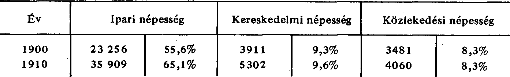

Ezekből az adatokból a következő foglalkozási megoszlás olvasható ki:
A nyugdíjasok és tőkések számára nincs adat erre az időszakra.
Az ipari népesség növekedése számszerűségében és az összes lakossághoz viszonyítva
is abszolút mértékben a legerőteljesebb. Tíz év alatt a gyári és üzemi munkásság száma
több mint 50%-kal emelkedett. Az iparhoz közvetlenül csatlakozó kereskedelem
foglalkoztatottsági létszáma megközelítően 40%-kal emelkedik csak, s a közlekedési
népesség növekedése a 15%-ot közelíti meg. A századfordulón Újpest a főváros
környékén a városi munkáslakosság arányát tekintve a negyedik helyen volt, tíz év
múlva már Újpesten élt nemcsak létszámát, de a lakosságon belüli arányát tekintve is a
legtöbb munkás. Tíz év alatt megelőzte Csepelt, Erzsébetfalvát, Albertfalvát, a három
helység munkáslétszáma együttesen sem érte el az újpesti munkáslétszámot.
Közigazgatás
Eözségpolitika
A községnek megalakulása után elöljáróságot kellett létrehoznia, 1841-tő1 bővült a
testület.
Kezdetben ez a „közigazgatás" úgy funkcionált, hogy „minden hónap első
vasárnapján" foglalkoztak a felmerült ügyekkel, majd az ügyek szaporodtával áttértek
a „minden héten" való tevékenységre. A bíró 1845-ig saját lakásán „hivataloskodott",
ekkor azonban átköltözött a mai Árpád út 21. alatt megépült községházára a községi
tanáccsal együtt.
1846-tól lett tulajdonképpen a bíróság társadalmi funkcióból fizetett tevékenység-
gé, évi 60 Ft fizetéssel. 1846-ban megkezdte tevékenységét a „végrehajtó biztos", és
letelepedett az első orvos, Seligmann Mór.
Az 1852. május 12-én megtartott tanácsülésen két jelentős határozat született.
Megkérték Seligmann Mórt, hogy lássa el a hatósági orvosi teendőket és a község
„szolgáit", ezért őt a község a fejadó kivételével minden teher alól mentesíti. A marhák
hetenkénti megvizsgálásával — erről felsőbb rendelet intézkedett — megbízták Morigia
